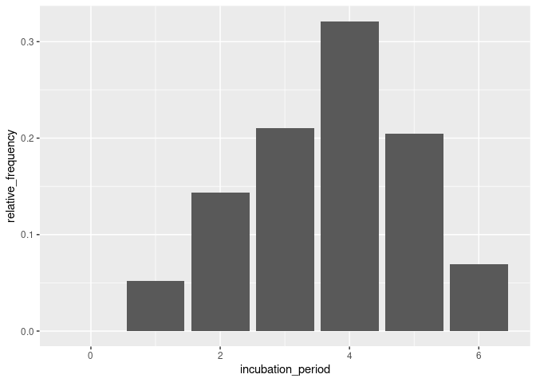

This package implements small helper functions usefull in infectious disease modelling and epidemics analysis.
Installing the package
To install the current stable, CRAN version of the package, type:
install.packages("epitrix")To benefit from the latest features and bug fixes, install the development, github version of the package using:
devtools::install_github("reconhub/epitrix")Note that this requires the package devtools installed.
What does it do?
The main features of the package include:
gamma_shapescale2mucv: convert shape and scale of a Gamma distribution to mean and CVgamma_mucv2shapescale: convert mean and CV of a Gamma distribution to shape and scalegamma_log_likelihood: Gamma log-likelihood using mean and CVr2R0: convert growth rate into a reproduction numberlm2R0_sample: generates a distribution of R0 from a log-incidence linear modelfit_disc_gamma: fits a discretised Gamma distribution to data (typically useful for describing delays)clean_labels: generate portable labels by removing non-standard characters or replacing them with their closest alphanumeric matches, standardising separators, etc.hash_names: generate unique, anonymised, reproducible labels from various data fields (e.g. First name, Last name, Date of birth).emperical_incubation_dist()will estimate the empirical incubation distribution if given a data frame with dates of onset and a range of exposure dates.fit_gamma_incubation_dist()wrapsempirical_incubation_dist()andfit_disc_gamma()to fit a discretized gamma distribution to an empirical incubation distribution
Resources
Worked examples
Fitting a gamma distribution to delay data
In this example, we simulate data which replicate the serial interval (SI), i.e. the delays between primary and secondary symptom onsets, in Ebola Virus Disease (EVD). We start by converting previously estimates of the mean and standard deviation of the SI (WHO Ebola Response Team (2014) NEJM 371:1481–1495) to the parameters of a Gamma distribution:
library(epitrix)
mu <- 15.3 # mean in days days
sigma <- 9.3 # standard deviation in days
cv <- sigma / mu # coefficient of variation
cv
#> [1] 0.6078431
param <- gamma_mucv2shapescale(mu, cv) # convertion to Gamma parameters
param
#> $shape
#> [1] 2.706556
#>
#> $scale
#> [1] 5.652941The shape and scale are parameters of a Gamma distribution we can use to generate delays. However, delays are typically reported per days, which implies a discretisation (from continuous time to discrete numbers). We use the package distcrete to achieve this discretisation. It generates a list of functions, including one to simulate data ($r), which we use to simulate 500 delays:
si <- distcrete::distcrete("gamma", interval = 1,
shape = param$shape,
scale = param$scale, w = 0)
si
#> A discrete distribution
#> name: gamma
#> parameters:
#> shape: 2.70655567117586
#> scale: 5.65294117647059
set.seed(1)
x <- si$r(500)
head(x, 10)
#> [1] 8 10 15 28 7 27 32 17 16 4
hist(x, col = "grey", border = "white",
xlab = "Days between primary and secondary onset",
main = "Simulated serial intervals")
x contains simulated data, for illustrative purpose. In practice, one would use real data from an ongoing outbreaks. Now we use fit_disc_gamma to estimate the parameters of a dicretised Gamma distribution from the data:
si_fit <- fit_disc_gamma(x)
si_fit
#> $mu
#> [1] 15.21973
#>
#> $cv
#> [1] 0.585091
#>
#> $sd
#> [1] 8.90493
#>
#> $ll
#> [1] -1741.393
#>
#> $converged
#> [1] TRUE
#>
#> $distribution
#> A discrete distribution
#> name: gamma
#> parameters:
#> shape: 2.9211452090504
#> scale: 5.21019425891896Converting a growth rate (r) to a reproduction number (R0)
The package incidence can fit a log-linear model to incidence curves (function fit), which produces a growth rate (r). This growth rate can in turn be translated into a basic reproduction number (R0) using r2R0. We illustrate this using simulated Ebola data from the outbreaks package, and using the serial interval from the previous example:
library(outbreaks)
library(incidence)
i <- incidence(ebola_sim$linelist$date_of_onset)
i
#> <incidence object>
#> [5888 cases from days 2014-04-07 to 2015-04-30]
#>
#> $counts: matrix with 389 rows and 1 columns
#> $n: 5888 cases in total
#> $dates: 389 dates marking the left-side of bins
#> $interval: 1 day
#> $timespan: 389 days
#> $cumulative: FALSE
f <- fit(i[1:150]) # fit on first 150 days
#> Warning in fit(i[1:150]): 22 dates with incidence of 0 ignored for fitting
plot(i[1:200], fit = f, color = "#9fc2fc")
r2R0(f$info$r, si$d(1:100))
#> [1] 1.348624
r2R0(f$info$r.conf, si$d(1:100))
#> 2.5 % 97.5 %
#> [1,] 1.314055 1.383674In addition, we can also use the function lm2R0_sample to generate samples of R0 values compatible with a model fit:
R0_val <- lm2R0_sample(f$model, si$d(1:100), n = 100)
head(R0_val)
#> [1] 1.350970 1.347374 1.350076 1.358523 1.341549 1.341634
hist(R0_val, col = "grey", border = "white")Standardising labels
If you want to use labels that will work across different computers, independent of local encoding and operating systems, clean_labels will make your life easier. The function transforms character strings by replacing diacritic symbols with their closest alphanumeric matches, setting all characters to lower case, and replacing various separators with a single, consistent one.
For instance:
x <- " Thîs- is A wêïrD LäBeL .."
x
#> [1] " Thîs- is A wêïrD LäBeL .."
clean_labels(x)
#> [1] "this_is_a_weird_label"
variables <- c("Date.of.ONSET ",
"/ date of hôspitalisation /",
"-DäTÈ--OF___DîSCHARGE-",
"GEndèr/",
" Location. ")
variables
#> [1] "Date.of.ONSET " "/ date of hôspitalisation /"
#> [3] "-DäTÈ--OF___DîSCHARGE-" "GEndèr/"
#> [5] " Location. "
clean_labels(variables)
#> [1] "date_of_onset" "date_of_hospitalisation"
#> [3] "date_of_discharge" "gender"
#> [5] "location"Anonymising data
hash_names can be used to generate hashed labels from linelist data. Based on pre-defined fields, it will generate anonymous labels. This system has the following desirable features:
given the same input, the output will always be the same, so this encoding system generates labels which can be used by different people and organisations
given different inputs, the output will always be different; even minor differences in input will result in entirely different outputs
given an output, it is very hard to infer the input (it requires hacking skills); if security is challenged, the hashing algorithm can be ‘salted’ to strengthen security
first_name <- c("Jane", "Joe", "Raoul", "Raoul")
last_name <- c("Doe", "Smith", "Dupont", "Dupond")
age <- c(25, 69, 36, 36)
## detailed output by default
hash_names(first_name, last_name, age)
#> label hash_short
#> 1 jane_doe_25 6485f2
#> 2 joe_smith_69 ea1ccc
#> 3 raoul_dupont_36 f60676
#> 4 raoul_dupond_36 cd7104
#> hash
#> 1 6485f29654c5a9d55625cd6efeb96d569917e1c272790959ad3fa132c6d51648
#> 2 ea1cccce320aa45a0d694ea12c30ff6b4b52c67f69d58b23dad5441ea17c5807
#> 3 f60676d1c11ae5badc0e5ec4dfde06eaba817a78f3d54eb327a25df485ec1efd
#> 4 cd7104e7e7009bfd988d5a4b46a930424908736065573e51a85d16575ed7c2a5
## short labels for practical use
hash_names(first_name, last_name, age,
size = 8, full = FALSE)
#> [1] "6485f296" "ea1cccce" "f60676d1" "cd7104e7"Estimate incubation periods
The function empirical_incubation_dist() computes the discrete probability distribution by giving equal weight to each patient. Thus, in the case of N patients, the n possible exposure dates of a given patient get the overall weight 1/(n*N). The function returns a data frame with column incubation_period containing the different incubation periods with a time step of one day and their relative_frequency.
Load environment:
Make a linelist object containing toy data with several possible exposure dates for each case:
ll <- sim_linelist(30) %>%
tibble()
x <- 0:15
y <- distcrete("gamma", 1, shape = 12, rate = 3, w = 0)$d(x)
mkexposures <- function(i) i - sample(x, size = sample.int(5, size = 1), replace = FALSE, prob = y)
exposures <- sapply(ll$date_of_onset, mkexposures)
ll$dates_exposure <- exposures
print(ll)
#> # A tibble: 30 × 6
#> id date_of_onset date_of_report gender outcome dates_exposure
#> <int> <date> <date> <chr> <chr> <list>
#> 1 1 2020-01-23 2020-02-01 male recovery <date [1]>
#> 2 2 2020-02-14 2020-02-22 female recovery <date [3]>
#> 3 3 2020-01-25 2020-01-30 male recovery <date [4]>
#> 4 4 2020-01-16 2020-01-21 male recovery <date [3]>
#> 5 5 2020-01-22 2020-01-27 female recovery <date [2]>
#> 6 6 2020-01-26 2020-02-02 male recovery <date [2]>
#> 7 7 2020-02-09 2020-02-17 female death <date [5]>
#> 8 8 2020-02-17 2020-02-23 male recovery <date [2]>
#> 9 9 2020-01-14 2020-01-26 male recovery <date [4]>
#> 10 10 2020-02-22 2020-02-26 female recovery <date [4]>
#> # … with 20 more rowsEmpirical distribution:
incubation_period_dist <- empirical_incubation_dist(ll, date_of_onset, dates_exposure)
print(incubation_period_dist)
#> # A tibble: 7 × 2
#> incubation_period relative_frequency
#> <dbl> <dbl>
#> 1 0 0
#> 2 1 0.0522
#> 3 2 0.143
#> 4 3 0.21
#> 5 4 0.321
#> 6 5 0.204
#> 7 6 0.0689
ggplot(incubation_period_dist, aes(incubation_period, relative_frequency)) +
geom_col()
Fit discrete gamma:
fit <- fit_gamma_incubation_dist(ll, date_of_onset, dates_exposure)
print(fit)
#> $mu
#> [1] 4.096257
#>
#> $cv
#> [1] 0.323797
#>
#> $sd
#> [1] 1.326356
#>
#> $ll
#> [1] -1702.111
#>
#> $converged
#> [1] TRUE
#>
#> $distribution
#> A discrete distribution
#> name: gamma
#> parameters:
#> shape: 9.5379337636799
#> scale: 0.429470107801068
x = c(0:10)
y = fit$distribution$d(x)
ggplot(data.frame(x = x, y = y), aes(x, y)) +
geom_col(data = incubation_period_dist, aes(incubation_period, relative_frequency)) +
geom_point(stat="identity", col = "red", size = 3) +
geom_line(stat="identity", col = "red")Note that if the possible exposure dates are consecutive for all patients then empirical_incubation_dist() and fit_gamma_incubation_dist() can take date ranges as inputs instead of lists of individual exposure dates (see help for details).
Vignettes
The overview vignette essentially replicates the content of this README. To request or contribute other vignettes, see the section “getting help, contributing”.
The estimate incubation vignette contains worked examples for the emperical_incubation_dist() fit_gamma_incubation_dist().
Websites
Click here for the website dedicated to epitrix.
Getting help, contributing
Bug reports and feature requests should be posted on github using the issue system. All other questions should be posted on the RECON forum.
Contributions are welcome via pull requests.
Please note that this project is released with a Contributor Code of Conduct. By participating in this project you agree to abide by its terms.